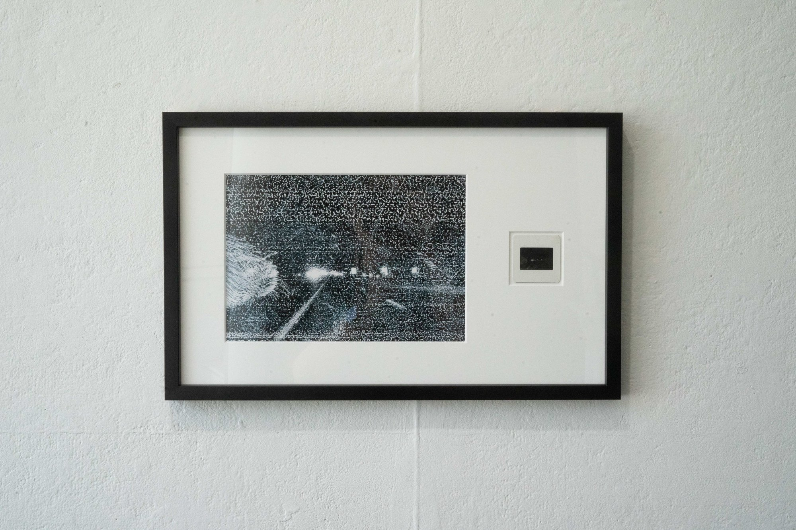
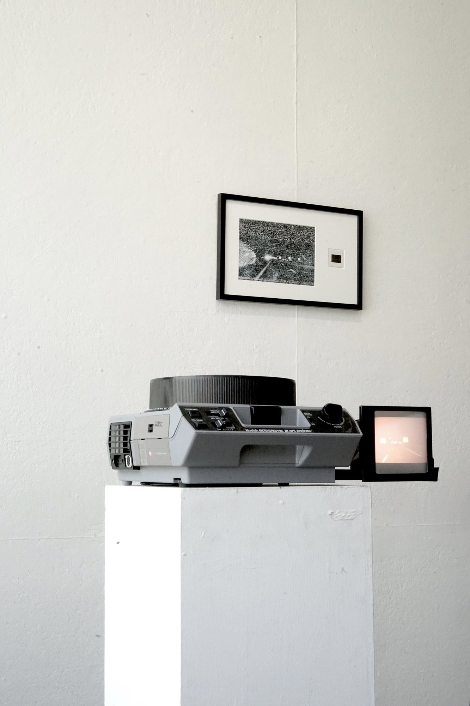

UNTITLED: FROM PROVIDENCE TO BOSTON
It is a digitally fabricated slideshow that captures late-night drive on I-95, where city lights blur by, and landscapes dissolve into the rearview mirror. Through a non-chemical process to create 35mm slides using inkjet printing, this work underlines a perpetual cycle that mirrors the ongoing quest for place, identity and elusive concept of home.

Untitled: output_0081.jpg , 2023, inkjet printed transparency in 35mm, digital scan, framed

Documentation of Untitled: From Providence to Boston , 2023, in Lilan Yang: Nowhere Near at Gallery 263, Cambridge, MA